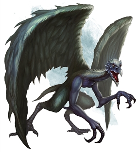

Vrock
Vrocks are dull-witted, capricious fiends that live only to create pain and carnage. A vrock resembles a giant hybrid of humanoid and vulture, its gnarled, bestial body and broad wings stinking of offal.
Vrocks gobble humanoid flesh whenever they can, stunning potential prey with an ear-splitting shriek, then swooping down to attack with beak and claw. Vrocks can shake their wings, releasing clouds of toxic spores.
Coveting pretty things, vrocks turn against each other for the chance to lay claim to cheap jewelry or ornamental stones. Despite their love of treasure, vrocks are difficult to bribe, seeing no reason to bargain when they can simply take what they want from a would-be bargainer’s corpse.